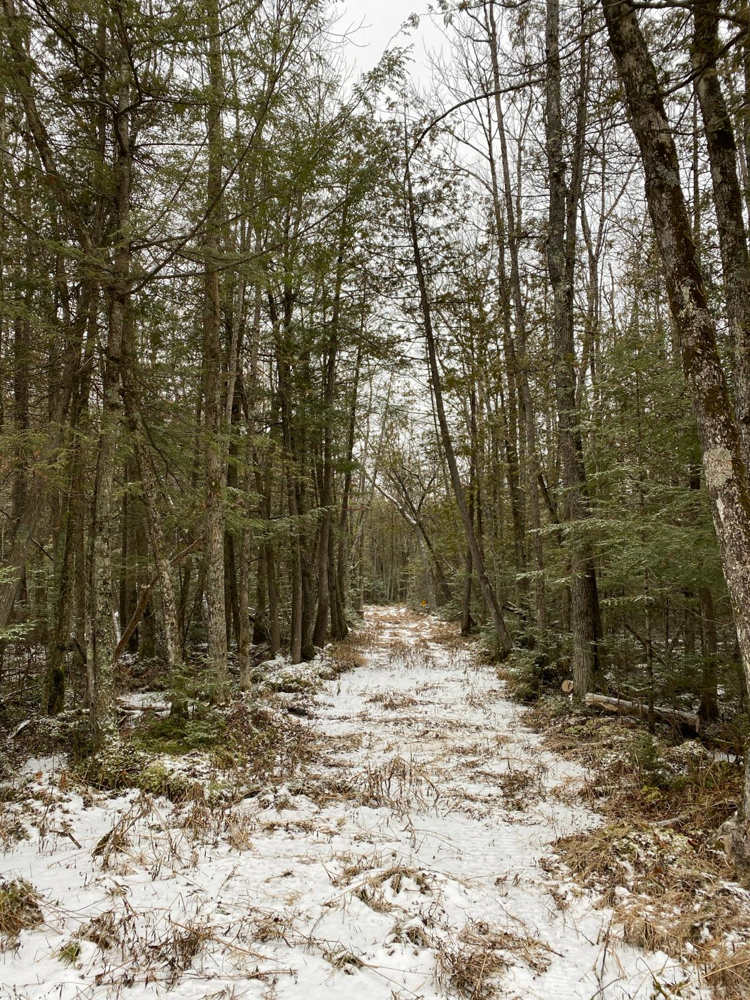

The Swamp
As I trudged through the spruce swamp on my family's piece of land in north-central Wisconsin, I could have been mistaken for a grouse hunter. The hunting license in my pocket, box of #7 1/2 ammunition in my vest, and 12 gauge shotgun in my hand contributed to this illusion, but I had little intent (or perhaps hope) of killing a bird this day. I had never flushed grouse on the property with a gun in my hand, so I rightly assumed the birds had been once again tipped off to my going afield. It's . . .